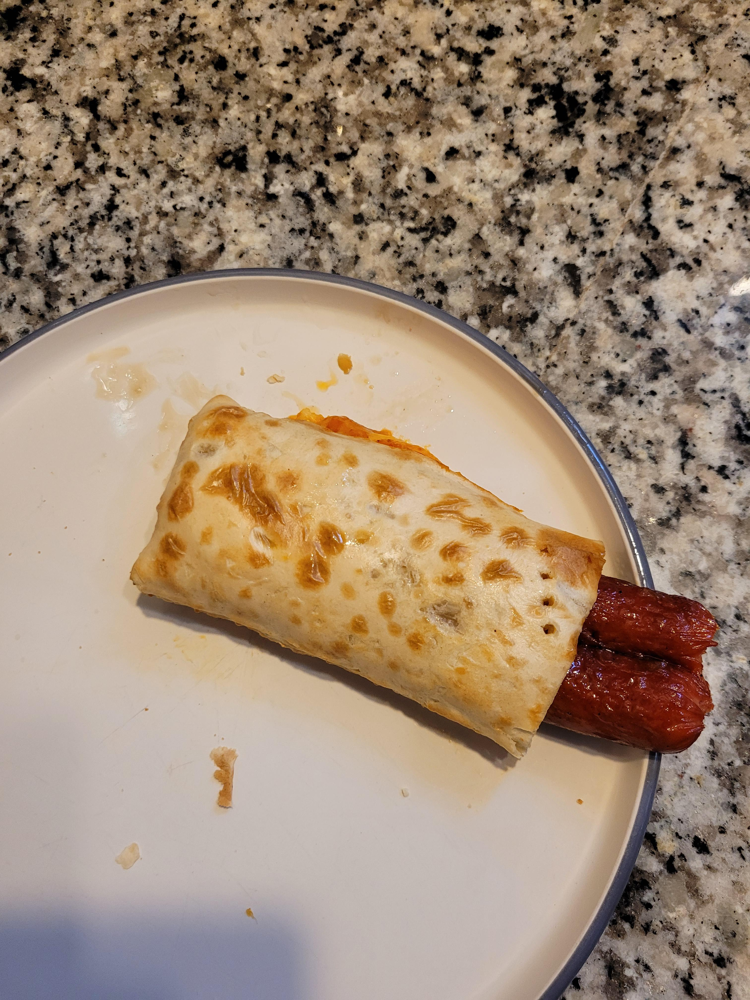

Hotdocket

INGREDIENTS
- 2 premium Kroger brand hot dogs
- 1 hot pocket
- crippling loneliness
DIRECTIONS
- Remove hotpocket and microwave 1:30 seconds.
- Stare out kitchen window at 3 AM. Reflect on how and why no one will ever love you ever again. Return to reality as the microwave dings.
- Using a plastic knife, disembowl the hot pocket. Choice of eating it now or later (technically it's a side dish).
- Place two room temperature Kroger brand hot dogs inside empty (just like you) hot pocket roll. Microwave for 30.
- Serve and chase with shot of Pepto.
Nutrition Facts
Per Serving: What are servings? Eat up you sad fuck.